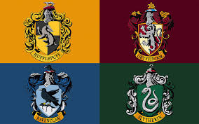
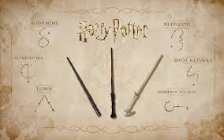

Bienvenidos al Mundo de Harry Potter
En este sitio encontrarás información detallada sobre el universo de Harry Potter, incluyendo personajes, casas, hechizos y mucho más.
Personajes de Harry Potter
En el universo de Harry Potter, los personajes principales como Harry Potter, Hermione Granger y Ron Weasley son utilizados como protagonistas en la lucha contra las fuerzas oscuras lideradas por Lord Voldemort. Estos personajes no solo representan la valentía y la amistad en la saga, sino que también desempeñan roles clave dentro de la comunidad mágica de Hogwarts, donde enfrentan desafíos, aprenden hechizos y descubren la verdad sobre sus propios destinos. A lo largo de la historia, cada personaje aporta habilidades únicas y un desarrollo personal significativo, influyendo profundamente en el curso de la narrativa y en el destino del mundo mágico.
Casas de Hogwarts
En el universo de Harry Potter, las casas de Hogwarts, como Gryffindor, Hufflepuff, Ravenclaw y Slytherin, juegan un papel crucial en la estructura y la identidad de la escuela de magia. Cada casa representa distintos valores y características que definen a sus miembros. Gryffindor valora el coraje y la valentía, Hufflepuff la lealtad y el trabajo duro, Ravenclaw la sabiduría y la inteligencia, y Slytherin la astucia y la determinación. Los estudiantes son seleccionados por el Sombrero Seleccionador al comienzo de su primer año en Hogwarts y son colocados en una de estas casas, donde participan en competiciones y eventos escolares, y se les asigna dormitorios y profesores. Las casas no solo sirven como comunidades dentro de la escuela, sino que también fomentan la camaradería y la identidad individual entre los estudiantes, afectando sus relaciones sociales y su desarrollo personal a lo largo de su tiempo en Hogwarts.
Hechizos Mágicos
Los hechizos en el universo de Harry Potter son conjuros mágicos utilizados por los magos y brujas para diversas funciones, como defensa, ataque, curación y manipulación de objetos. Cada hechizo tiene su propia utilidad y efecto específico, y se pueden aprender y practicar en entornos controlados como Hogwarts, así como en situaciones de peligro o enfrentamiento contra criaturas mágicas y enemigos.